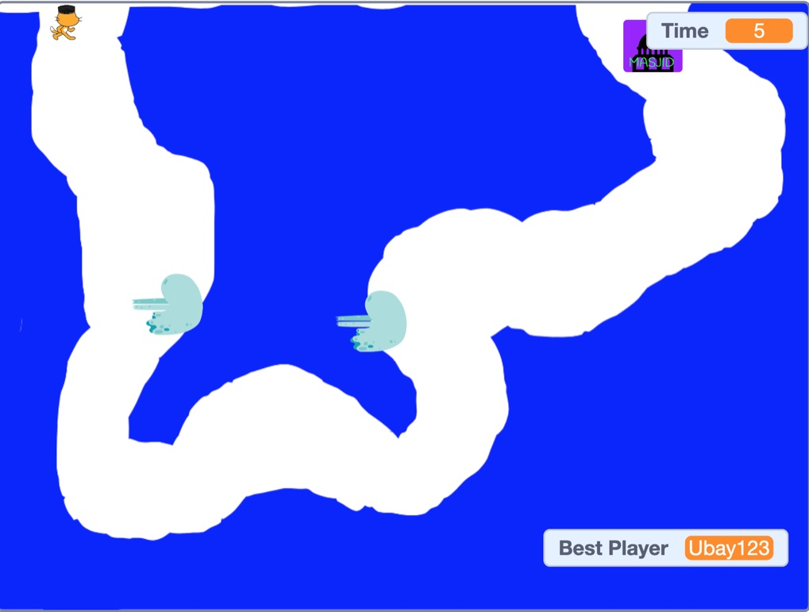

Projek Saya:
01.Scract
 Klik DisiniGame to Masjid adalah game bertipe game Puzzle yang dimana
User akan disuruh melewati rintangan untuk
pergi ke Masjid(finish)
Ini adalah salah satu projek saya di scratch menggunakan:
- Variable
- Block Sensing
- Block Operator
- Block Sound